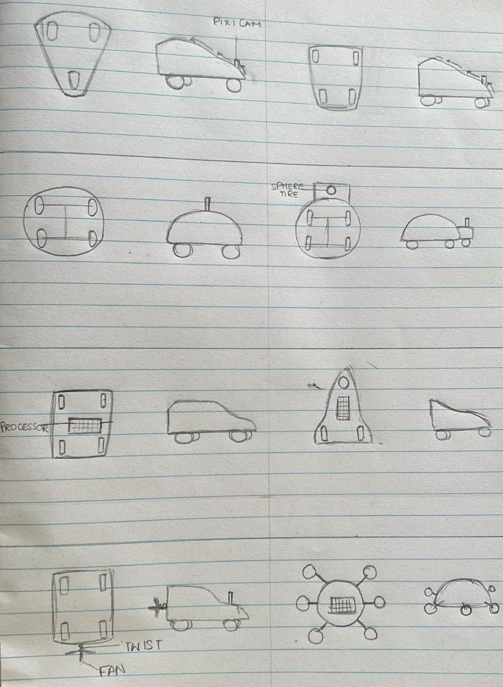
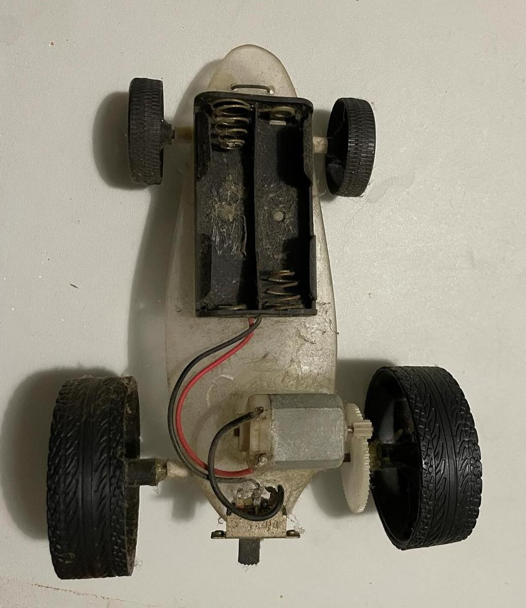
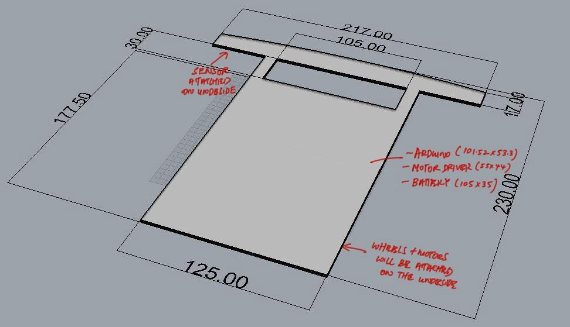
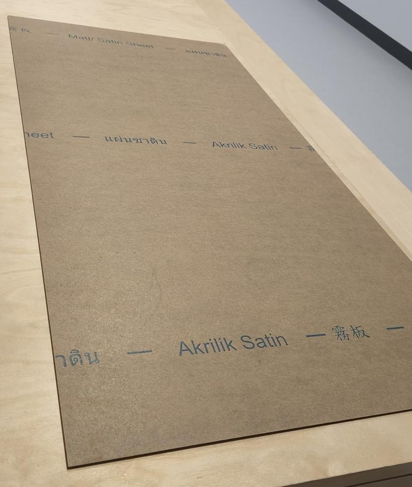
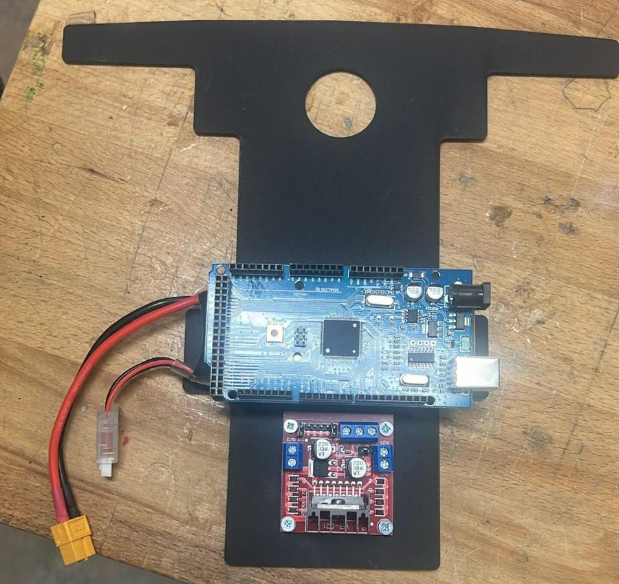
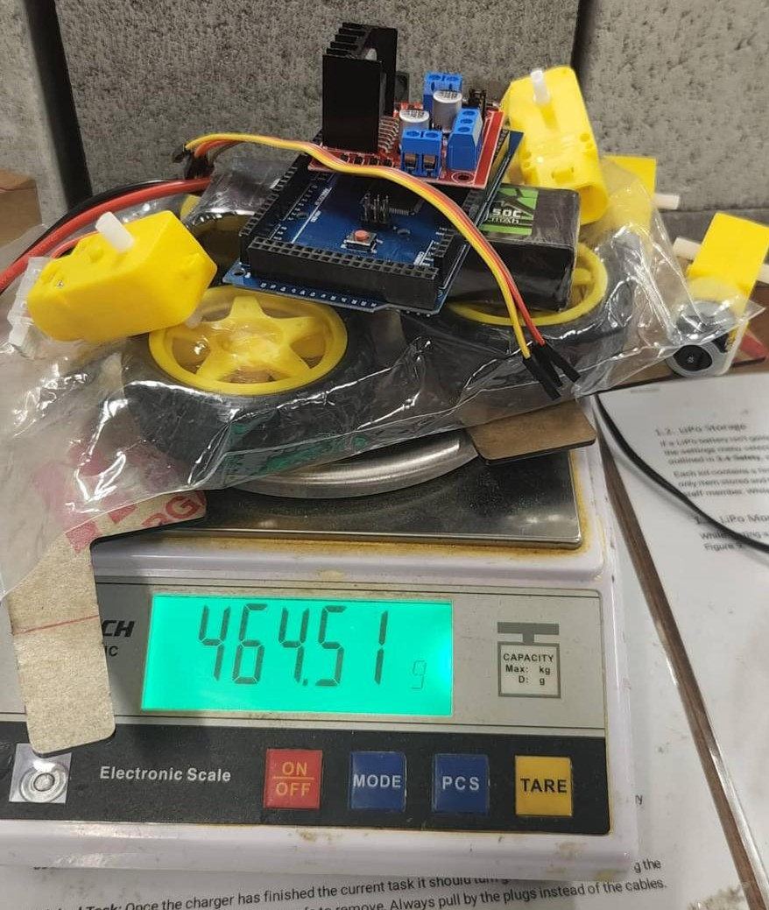
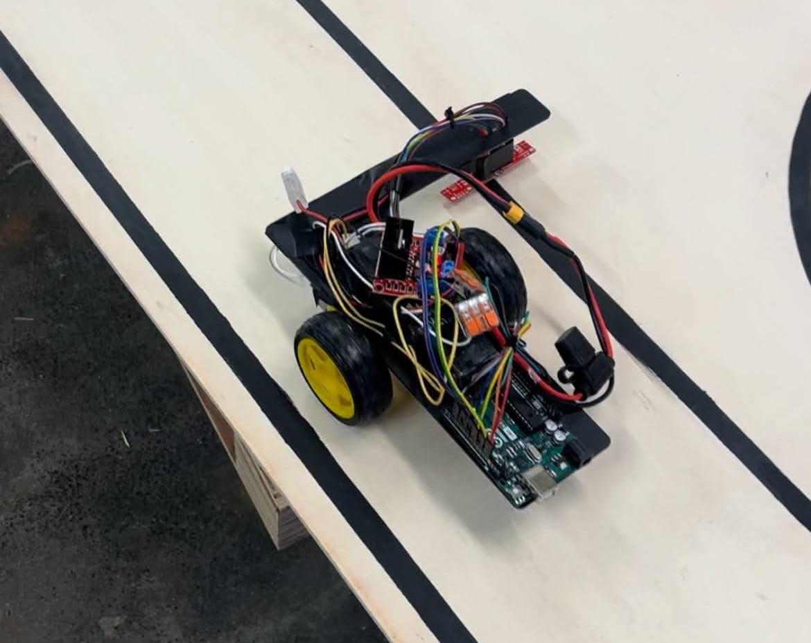
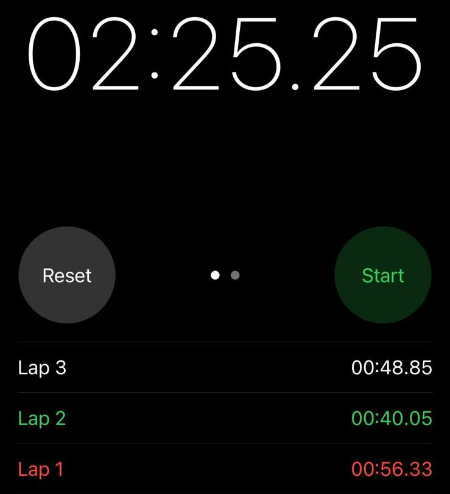

Development and Validation of an Autonomous Line-Following Vehicle for Competitive Navigation Challenges
DESN1000: Introduction to Engineering Design and Innovation
Designed, manufactured, and tested an autonomous line-following vehicle for a competitive navigation challenge. The platform utilised an eight-sensor infrared tracking array, Arduino-based control system, and differential drive architecture to autonomously navigate a predefined course while meeting strict mass, dimensional, and budget constraints.
The project involved the integration of mechanical, electrical, and software subsystems through an iterative engineering design process. Emphasis was placed on sensor performance, system reliability, component packaging, and validation testing to maximise navigation accuracy and competition performance.
The challenge required the development of an autonomous vehicle capable of reliably detecting and following a marked track under dynamic competition conditions. The design needed to satisfy predefined constraints on mass, dimensions, cost, and available components while maintaining consistent navigation performance.
Achieving reliable operation required careful integration of sensing, control, structural, and power systems. Design decisions needed to balance vehicle speed, tracking accuracy, manufacturability, and robustness to ensure repeatable performance throughout competition testing.

Preliminary concept exploration used to evaluate alternative vehicle architectures, drivetrain layouts, and sensor integration strategies.

Benchmarking of previous competition vehicles was conducted to identify successful design features, common failure modes, and opportunities for performance improvement.

Preliminary packaging study defining chassis geometry, component placement, and compliance with competition dimensional constraints.

Acrylic was selected as the primary chassis material due to its favourable strength-to-weight ratio, ease of manufacture, dimensional stability, and low cost.

Component packaging and placement were refined to improve weight distribution, maintain accessibility, and minimise wiring complexity.

Mass budgeting and component tracking were used throughout development to ensure compliance with the 500 g competition weight limit.

Completed prototype undergoing system validation and track testing prior to competition deployment.
Iterative testing and calibration were performed to evaluate tracking accuracy, sensor performance, and overall system reliability.

Quantitative performance analysis was conducted using lap-time measurements, achieving an average lap time of approximately 48 seconds.
Successfully delivered a fully functional autonomous vehicle incorporating 8 infrared line-tracking sensors, differential motor control, and an Arduino-based control system.
The final vehicle achieved reliable navigation performance and placed 4th overall in the competition while satisfying all design constraints relating to size, mass, and budget. In addition, an overall assessment outcome of 82% was achieved.
This project provided my first exposure to systems integration and demonstrated how mechanical, electrical, and software components must work together to achieve overall system performance.
I gained practical experience in prototype iteration, testing, troubleshooting, and engineering communication while developing a deeper appreciation for the importance of validation and refinement throughout the design process.